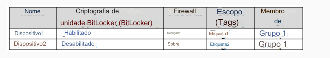
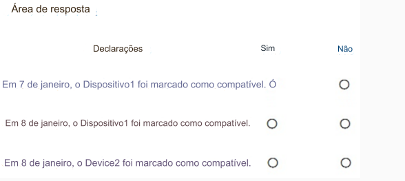

105- PONTO DE ACESSO
Você tem uma assinatura do Microsoft Intune que possui as seguintes configurações de política de conformidade do dispositivo:
• Marcar dispositivos sem política de conformidade atribuída como: Compatível
• Período de validade do status de conformidade (dias): 14
Em 1º de janeiro, você registrará dispositivos Windows 10 no Intune, conforme mostrado na tabela a seguir.

Em 4 de janeiro, você cria as duas políticas de conformidade de dispositivos a seguir:
• Nome: Política1
• Plataforma: Windows 10 e posterior
• Exigir BitLocker: Exigir
• Marcar o dispositivo como não conforme: 5 dias após a não conformidade
• Escopo (Tags): Tag1
• Nome: Política2
• Plataforma: Windows 10 e posterior
• Firewall: Exigir
• Marcar o dispositivo como não compatível: imediatamente
• Escopo (Tags): Tag2
Em 5 de janeiro, você atribui a Política1 e a Política2 ao Grupo1.
Para cada uma das afirmações a seguir, selecione Sim se a afirmação for verdadeira. Caso contrário, selecione Não.
NOTA: Cada seleção correta vale um ponto.
